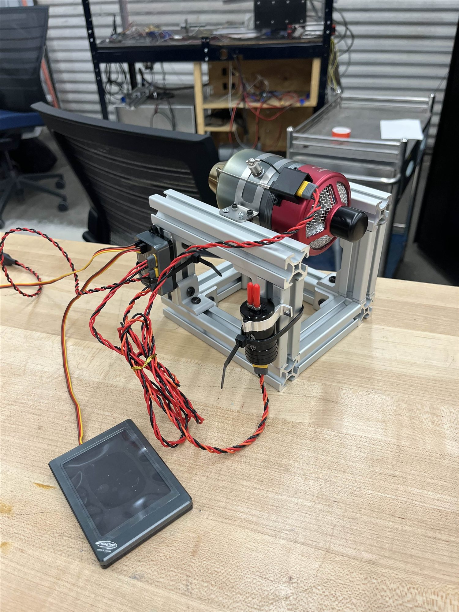
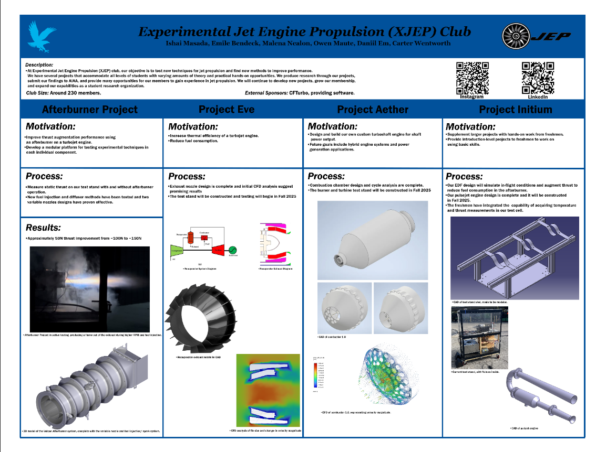

06 / 06
Experimental Jet Engine Propulsion
Leading the afterburner and recuperator programs for Embry-Riddle's experimental jet engine club.
- 30+
- Students directed
- 2
- Engine programs
- 100%+
- Fuel delivery gain from a custom gear pump
- 10
- SPI sensors on a custom DAQ
Overview
Vice President, Afterburner & Recuperator Lead
October 2024 to present
XJEP is the experimental program of Embry-Riddle's jet propulsion club. It advances small-scale propulsion through hands-on builds, simulation, and test. I serve as Vice President on the executive board, leading project selection, technical reviews, and problem solving across the club.
I lead the afterburner program, teaching and directing a student team building a small-scale modular afterburner through CFD, combustion analysis, and fuel system work. I designed the internal recuperator nozzle and nozzle fins and validated the geometry in ANSYS CFD.
I also led the team converting a micro gas turbine into an electrical generator that still makes thrust. That work grew into Project ADAM.


Highlights
- Custom gear pump that improved fuel delivery by over 100%
- Custom data acquisition system with 10 SPI sensors and serial telemetry
- Recuperator nozzle and fin assemblies validated in ANSYS CFD
- Power Generation Lead for Embry-Riddle's 2026-2027 USAF/AFRL Aerospace Propulsion Outreach Program entry
 Next projectProject ADAM
Next projectProject ADAM